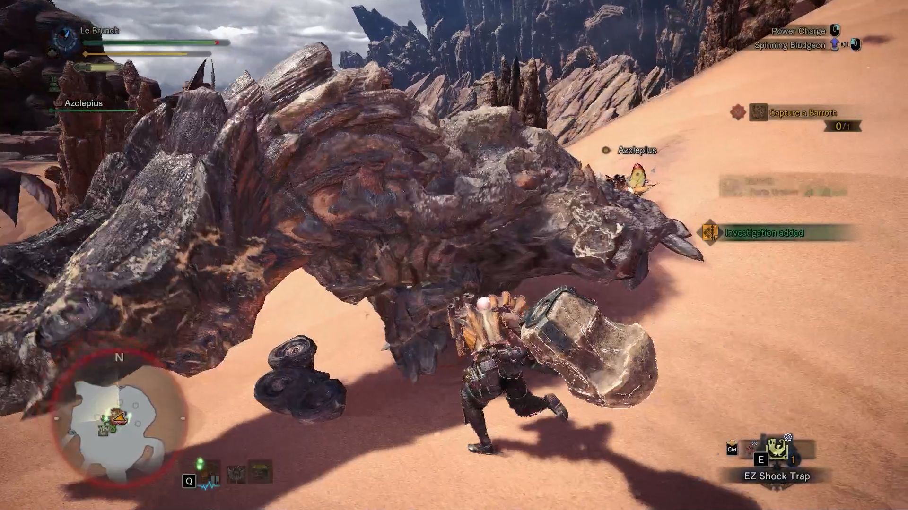

Monster Hunter: World
Overview

Monster Hunter: World is an action RPG where players take the mantle of a hunter, tracking and battling massive, fantastical yet grounded beasts across various ecosystems. As part of the Research Commission, you’ve been sent to the New World to study—and slay—monsters new to science.
Developed by Capcom, Monster Hunter: World marked a turning point for the old series. While long beloved in Japan, earlier entries had a steep learning curve and a limited mainstream attention in the West. But with World, the franchise finally broke through—streamlining gameplay, adding seamless maps, and selling millions of copies.
So what made this particular entry a global hit?
Let’s Split the Screen and break it down

Mechanics
Monster Hunter: World thrives on deep systems layered with interlocking mechanics—weapon combos, elemental damage, armor sets, gathering, crafting, tracking, and more. Each of the 14 weapon types feels like a class of its own, offering entirely different gameplay. Systems are dense but rewarding for players who engage with them.

Challenge
Just as in Sun Tzu’s Art of War, every battle is won before it is ever fought. Preparation is half the battle, and picking the right weapon and strategy is paramount to victory. Combat is methodical, skill-based, and punishing without being unfair. Every monster has unique behavior patterns and weaknesses to learn. Fights can feel like boss battles from start to finish, especially in multiplayer. Weapon mastery, positioning, and timing are crucial—and success always feels earned.

Level Design
The world is divided into large, interconnected maps with no loading screens between zones. Each area is a living ecosystem—monsters hunt each other, weather changes, and terrain plays into combat strategy. Hidden paths, climbing routes, and destructible environments make exploration rewarding—though these can be confusing for a new player.

User Interface
The UI is robust but can be overwhelming for new players. Menus, gear upgrades, and item boxes are deep but a bit cluttered. Some seasoned players even joke that half the game is navigating menus. Still, quest info, tracking tools, and minimap features are generally clear once you get used to them. The radial menu and item wheel improve combat flow.

Narrative Design
The story is serviceable but not the main draw. It serves more as a frame to push you into new environments and monster fights. The NPCs are charming, and the Handler adds levity, but most of the narrative is carried by the worldbuilding and the thrill of the hunt itself.

Audio
Monster roars, weapon impacts, and environmental sounds are all deeply immersive. The soundtrack adapts dynamically during battles, swelling during climactic moments. Audio cues—like a monster limping or enraged—provide essential information in the absence of traditional health bars.

Game Feel
Monster Hunter: World has a weighty, satisfying feel to movement and combat. Weapons feel powerful and deliberate, with long animations that reward commitment. Hits feel impactful, monsters react viscerally, and even gathering materials or cooking a steak has its own satisfying rhythm.